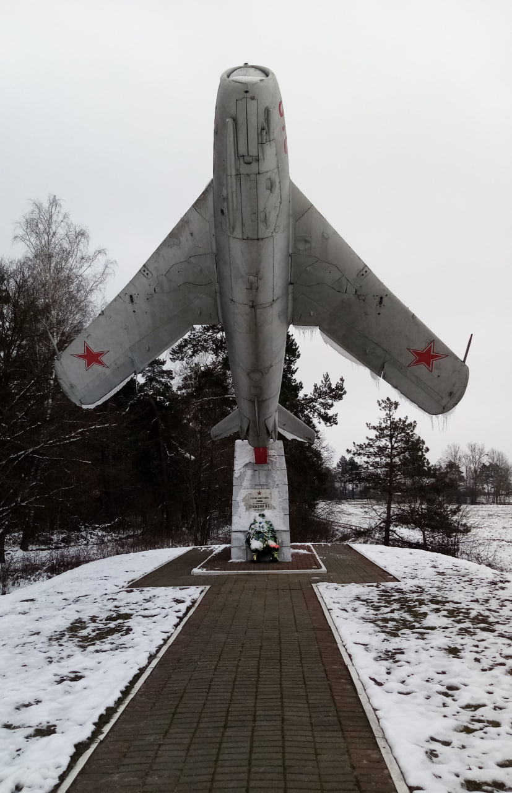

Памятник Николаю Давыдову

МиГ-17 — памятник Герою Советского Союза Н.С.Давыдову, погибшему при исполнении служебных обязанностей в 1949 году. Памятник установлен в 1981 году. Сам герой похоронен на старом городском кладбище, а в микрорайоне СХТ его именем названа улица.